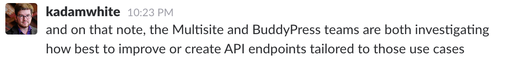
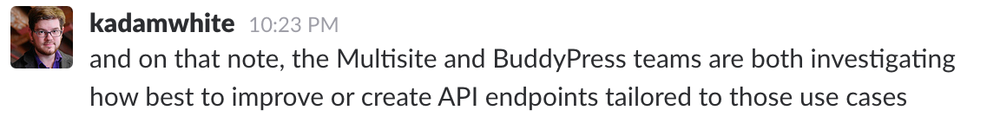

Getting the REST API
ready for Multisite
A WordPress Core case study
Presented by @felixarntzREST API endpoints are merged into core. üéâ
REST API is one of the 3 focuses. üéâ
http://wordpress.tv/2016/12/07/matt-mullenweg-state-of-the-word-2016/
Multisite is not one of the 3 focuses. üò©
http://wordpress.tv/2016/12/07/matt-mullenweg-state-of-the-word-2016/
But we can sneak our way in there. üòè
 

What do we need to do?
-
Enhance the
wp/v2/usersendpoint to support Multisite functionality -
Introduce a
wp/v2/sitesendpoint for access to sites in a network -
(Introduce a
wp/v2/networksendpoint for access to networks) → Later
1. Enhancing the wp/v2/users endpoint
- Fix what's wrong
- Implement missing functionality
1.a. Fix what's wrong with wp/v2/users
- 4.7 allowed to read and edit users even when they weren't a member of the current site.
- In 4.7 editing a user from another site would automatically result in that user being added to the current site.
This is wrong, but implementing a solid solution will take time.
→ Quick fix: Remove the functionality now!
Backward compatibility issues?
✅ Fixed in https://core.trac.wordpress.org/changeset/40106 (4.7.3)
1.a. Fix what's wrong with wp/v2/users
In 4.7 the capabilities checked in the REST API when updating a user are wrong.
- In multisite, only network administrators can edit other users than themselves. Regular site administrators can only change roles of other users.
- In the REST API, network administrators can do these things, however site administrators cannot change user roles.
→ Quick fix will go into next minor release.
if ( ! current_user_can( 'edit_user', $user->ID ) ) {
return new WP_Error( 'rest_cannot_edit', __( 'Sorry, you are not allowed to edit this user.' ), array( 'status' => rest_authorization_required_code() ) );
}
if ( ! empty( $request['roles'] ) && ! current_user_can( 'edit_users' ) ) {
return new WP_Error( 'rest_cannot_edit_roles', __( 'Sorry, you are not allowed to edit roles of this user.' ), array( 'status' => rest_authorization_required_code() ) );
}
return true;
if ( ! empty( $request['roles'] ) ) {
if ( ! current_user_can( 'promote_user', $user->ID ) ) {
return new WP_Error( 'rest_cannot_edit_roles', __( 'Sorry, you are not allowed to edit roles of this user.' ), array( 'status' => rest_authorization_required_code() ) );
}
$request_params = $request->get_params();
if ( count( $request_params ) === 2 ) {
return true;
}
}
if ( ! current_user_can( 'edit_user', $user->ID ) ) {
return new WP_Error( 'rest_cannot_edit', __( 'Sorry, you are not allowed to edit this user.' ), array( 'status' => rest_authorization_required_code() ) );
}
return true;
1.b. Implement missing functionality for wp/v2/users
Current state:
- You cannot view or edit users from another site.
- You cannot add existing users to a site.
- You cannot remove users from a site.
- You cannot delete users.
The latter two features were discussed and disabled in Ticket #38962 prior to 4.7.
Challenge: Users are global objects in a Multisite.
Possible solution: Introduce a global parameter.
Read access to users
-
GET wp/v2/userswill list users from the current site. -
GET wp/v2/users?global=truewill list all users.
Read access to a user
-
GET wp/v2/users/<id>displays a user from the current site. -
GET wp/v2/users/<id>?global=truedisplays any user.
Edit access to a user
-
POST/PUT/PATCH wp/v2/users/<id>allows editing a user of the current site. -
POST/PUT/PATCH wp/v2/users/<id>?global=trueallows editing a user from any site.
Creating and adding a user
-
POST wp/v2/userscreates a new user and adds it to the current site. -
POST wp/v2/users?email=<existing-email-address>adds an existing user to the current site.
→ This is not very clear and we might need to find a better solution.
Related problem: Site administrators can create users, but not edit them. ¯\_(ツ)_/¯
Deleting and removing a user
-
DELETE wp/v2/users/<id>removes a user from the current site. -
DELETE wp/v2/users/<id>?global=truedeletes a user completely.
2. Introducing a wp/v2/sites endpoint
- Implement a set of functions for a real sites API
- Figure out how to support queries by certain site data
Getting the REST API
ready for Multisite
A WordPress Core case study
Getting Multisite
ready for the REST API
A WordPress Core case study
2.a. Implementing a real sites API
-
WP_Siteclass
→ ✅ in 4.5 -
WP_Site_Queryclass
→ ✅ in 4.6
2.a. Implementing a real sites API
-
wpmu_create_blog( $domain, $path, $title, $user_id, $meta, $site_id )function
→wp_insert_site( $args )
→wp_install_site( $site_id, $args ) -
update_blog_details( $blog_id, $details )function
→wp_update_site( $site_id, $args ) -
wpmu_delete_blog( $blog_id, $drop )function
→wp_delete_site( $site_id )
→wp_uninstall_site( $site_id )
2.b. Figuring out better query support
Current state:
- You cannot query sites by their title, description, language or other important piece of data.
-
Retrieving those pieces of data requires use of the rather expensive
switch_to_blog()function.
Challenge: These values are stored per site in individual wp_options tables.
Possible solution:
Approach: Site metadata
-
wp_posts→wp_postmeta -
wp_comments→wp_commentmeta -
wp_users→wp_usermeta -
wp_terms→wp_termmeta -
wp_site→wp_sitemeta(Networks!) -
wp_blogs→wp_blogmeta? (Sites!)
Approach: Site metadata
Initial plan: Determine a whitelist of options that should be migrated to the new site metadata table.
Approach: Site metadata?
What is metadata?
- Are all options actually site metadata?
- Are options a subset of site metadata?
- Are options and site metadata something completely different?
What is metadata?
Looking at the current state of WordPress:
- For networks, there is no meta API, instead it has its own options API.
-
However, all network options are stored in a table called
wp_sitemeta. -
wpmu_create_blog()accepts a$metaarray, and the values in it are then stored as options.
¯\_(ツ)_/¯
We can use your help!
- Site metadata ticket: https://core.trac.wordpress.org/ticket/37923
- Users endpoint ticket: https://core.trac.wordpress.org/ticket/39544
- Background information: https://make.wordpress.org/core/tag/multisite/
-
Weekly meetings: https://wordpress.slack.com/messages/core-multisite/
(every Tuesday at 17:00 UTC)
Thank you!
Felix Arntz
Plugin Developer / Core Committer / Freelancer